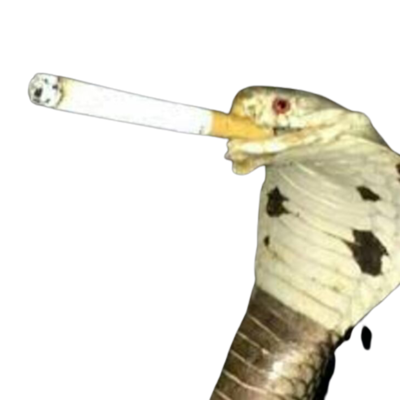

Kobra Kajetan
Kobra Kajetan jeszcze jako młody wąż podpierdolił swojego pierwszego szluga ojcu chcąc się przypodobać kolegom z klasy. Wziął bucha i o mało nie stracił przytomności. Aby nie wyjść na pizdę Kajetan stłumił w sobie kaszel i ze łzami w
oczach wypuszczał gęsty dym nosem. Minęło 5 lat a Kajetan nie odkłada już papierosa na dłużej niż godzinę. Całkiem późno się zorientował, że to już nie jest zabawa, lecz nałóg. Nie przejął się tym, zapach dymu tytoniowego już mu nie
przeszkadzał, lubił go. Miał swoje ulubione – Беломоркана́л były to papierosy z ustnikiem z czasów epoki ZSRR. Przypominały mu o ojcu. Tata Kajetana poszedł po mleko i do dziś nie wrócił, a matka robi minimum by przeżył– daje mu
niewielkie kieszonkowe, dach nad głową, czasami obiad. Kobra Kajetan musi radzić sobie sam.
Kajetan jest już nastolatkiem, dostał się do liceum na Pradze. Nie zwrócił na siebie uwagi rówieśników, bo przecież jako osoba nie miał nic do zaoferowania. Poczuł potrzebę zaistnienia w towarzystwie starszych węży. Kajetan kreował się na
mądrego, pewnego siebie węża. Za tą maską krył się jednak smutny wężyk z mnóstwem problemów. Pragnął, zbudować w ten sposób autorytet wśród innych węży. Kajetan z czasem został zapoznany z browarkiem. Poczuł wtedy, że ma kolejną okazję by
zaistnieć wśród nowych znajomych. Gdy ktoś delikatnym, lecz zdecydowanym ruchem przekazał mu lśniącą puszkę Harnasia, Kajetan ochoczo zabrał się do spożywania trunku. Kajetanowi blaskiem księżycowym zaświeciły się oczy, gdy na tylnej
ściance swojego przełyku poczuł chłodną strużkę boskiego nektaru. Od tamtej pory jego życie nie było takie samo.
Kajetanowi wyrosły już pierwsze wężowe wąsy, a wraz z nimi pojawiły się kolejne melanże. Kajetan ma kilku starszych kolegów, którzy kupują mu alkohol, przez co urozmaiciło się jego menu alkoholowe. Przez pewne znajomości Kajetan ląduję na
imprezie starszego węża. Było tam pełno różnych napoi, których nasza młoda kobra nie miała jeszcze okazji skosztować. Smakowe browary, tanie wino, wódka i soki na popite. Było to dla niego ekscytujące wydarzenie. Impreza się rozkręca,
atmosfera jest co raz luźniejsza. Kajetan z kiepem w gębie idzie zaczerpnąć głębokiego grzdyla czystej. Żubrówka Biała, ach ten niepowtarzalny aromat. Kajetan podszedł do lepiącego się stołu pełnego kieliszków butelek i słodkich napoi, a
napierdolony kolega nalał mu żubrówki do wyszczerbionego kieliszka, z którego prawdopodobnie pił już każdy. Kajetan nie gasząc fajki wypija kolejkę. Smak ten zapadł w jego pamięci na długo, walory smakowe połechtały kubki smakowe
Kajetana. Słodka, rozgrzewająca substancja spłynęła ku jego żołądkowi, by nadać temu wieczorowi trochę kolorów. Tak jak przy pierwszym papierosie udało mu się zachować pozory doświadczonego.
Kajetan ma teraz 36 lat. Jest alkoholikiem. Jest częściej na kacu niż na kanapie. Co raz więcej pije, a jego problemy się mnożą. Kobra Kajetan co dzień rozmyśla, czy to nie moment by zakończyć swoje cierpienia.